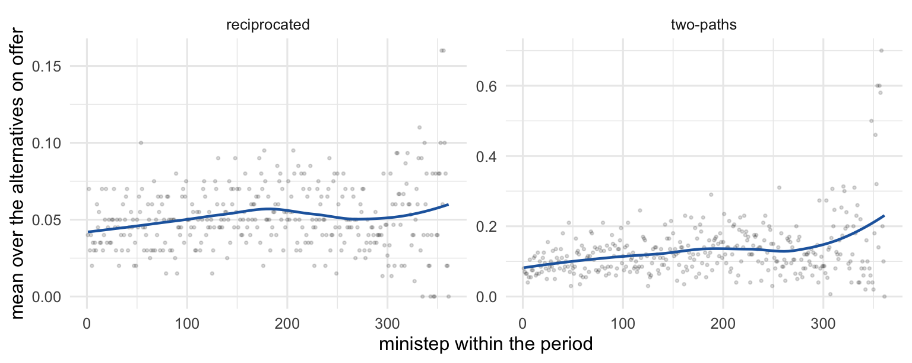
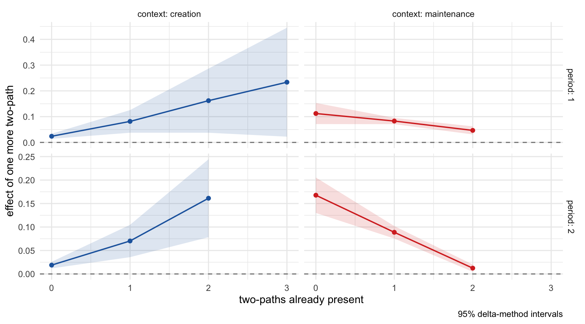
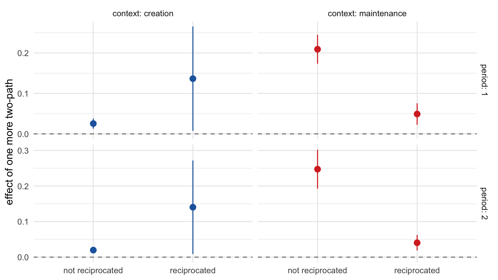

install.packages(c("remotes", "ggplot2"))
remotes::install_github("stocnet/rsiena@sienaMargins")3 Interpreting a SAOM
From coefficients to probabilities, one decision at a time
3.1 Setup — run once
Everything here needs the sienaMargins branch of RSiena, which is where predict() and marginalEffects() live, plus ggplot2 for the figures.
These chunks do not run when the document is rendered. Run whichever one matches your setup by hand, then restart R.
If you keep this project’s dependencies in renv instead:
install.packages("renv")
renv::install(c("stocnet/rsiena@sienaMargins", "ggplot2"))Check that it worked — predict() needs to accept a targets object:
packageVersion("RSiena")
library("RSiena")
exists("make_predict_targets") # TRUE on the sienaMargins branchAfterwards we can setup
3.2 The model we are trying to interpret
Take the s50 data that ships with RSiena: 50 pupils, three waves of friendship nominations, plus smoking and drinking. Two actor covariates, so the model has both kinds of effect — structural effects belonging to a single alternative, and covariate effects that move an actor’s whole choice set at once.
mynet <- as_dependent_rsiena(array(c(s501, s502, s503), dim = c(50, 50, 3)))
smoke <- as_covariate_rsiena(s50s[, 1])
alcohol <- as_covariate_rsiena(s50a[, 1])
mydata <- make_data_rsiena(mynet, smoke, alcohol)
myeff <- make_specification(mydata)
myeff <- set_effect(myeff, transTrip1, verbose = FALSE)
myeff <- set_effect(myeff, egoX, covar1 = "smoke", verbose = FALSE)
myeff <- set_effect(myeff, egoX, covar1 = "alcohol", verbose = FALSE)
myeff <- set_effect(myeff, altX, covar1 = "alcohol", verbose = FALSE)
## A user-specified interaction of reciprocity and transitivity. Its change
## statistic is the product of the two components' -- which matters in Step 8.
myeff <- set_interaction(myeff, c(recip, transTrip1), verbose = FALSE)
myalgo <- set_algorithm_saom(cond = FALSE, n3 = 1000, seed = 42)
ans <- siena(data = mydata, effects = myeff, control_algo = myalgo,
batch = TRUE, verbose = FALSE)siena will create/use an output file mydata_out.txt .data.frame(effect = names(coef(ans)),
estimate = round(coef(ans), 3),
SE = round(sqrt(diag(vcov(ans))), 3),
row.names = NULL)| effect | estimate | SE |
|---|---|---|
| mynet_density_eval | -2.797 | 0.149 |
| mynet_recip_eval | 2.790 | 0.286 |
| mynet_transTrip1_eval | 1.361 | 0.210 |
| mynet_egoX_smoke_eval | 0.063 | 0.128 |
| mynet_altX_alcohol_eval | -0.027 | 0.067 |
| mynet_egoX_alcohol_eval | 0.009 | 0.092 |
| mynet_unspInt_eval | -0.406 | 0.502 |
Reciprocity is large and positive. But how large? The coefficient is a change in a log-odds inside a choice among 50 alternatives. It is not a probability, not a rate, and not easily comparable to the reciprocity coefficient of another model on another network.
This document walks from that coefficient to quantities that are (more so).
3.3 Step 1 — the descriptive difference
Three simple statistics we can count directly between two observed waves, with no model.
as_tie <- function(m) { m[m == 10] <- NA; diag(m) <- NA; m }
x1 <- as_tie(s501); x2 <- as_tie(s502)
ok <- !is.na(x1) & !is.na(x2)
p_rec <- mean(x2[ok & t(x1) == 1] == 1)
p_not <- mean(x2[ok & t(x1) == 0] == 1)
data.frame(
quantity = c("tie creation (non-ties at t1 that appear)",
"tie maintenance (ties at t1 that survive)",
"P(tie at t2 | reciprocated at t1)",
"P(tie at t2 | not reciprocated at t1)",
"descriptive difference in probability"),
value = round(c(mean(x2[ok & x1 == 0] == 1),
mean(x2[ok & x1 == 1] == 1),
p_rec, p_not, p_rec - p_not), 3))| quantity | value |
|---|---|
| tie creation (non-ties at t1 that appear) | 0.025 |
| tie maintenance (ties at t1 that survive) | 0.504 |
| P(tie at t2 | reciprocated at t1) | 0.478 |
| P(tie at t2 | not reciprocated at t1) | 0.027 |
| descriptive difference in probability | 0.451 |
The last row is the descriptive difference in probability: are ties more prevalent where the condition holds? Any researcher can compute it directly from two waves.
It is also a gap that reflects all mechanisms at once. Dyads that reciprocate are also more transitively embedded, and involve pupils who differ in other ways. Nothing here separates a reciprocity mechanism from any of that.
Note too how different tie creation and tie maintenance are. Hold on to that.
3.4 Step 2 — what the model sees
Before asking the model anything, it is worth looking at what it works from. The change statistics describe every alternative open to every actor: one row per ego–alter pair.
cs <- getChangeStatistics(ans, mydata, effects = myeff, depvar = "mynet")
head(cs[cs$ego != cs$choice, ], 4)| group | period | ego | choice | mynet_density | mynet_recip | mynet_transTrip1 | mynet_egoX_smoke | mynet_altX_alcohol | mynet_egoX_alcohol | mynet_unspInt | |
|---|---|---|---|---|---|---|---|---|---|---|---|
| 2 | 1 | 1 | 1 | 2 | 1 | 0 | 1 | 0.62 | -0.88 | 0.12 | 0 |
| 3 | 1 | 1 | 1 | 3 | 1 | 0 | 0 | 0.62 | -0.88 | 0.12 | 0 |
| 4 | 1 | 1 | 1 | 4 | 1 | 0 | 0 | 0.62 | -0.88 | 0.12 | 0 |
| 5 | 1 | 1 | 1 | 5 | 1 | 0 | 0 | 0.62 | 0.12 | 0.12 | 0 |
Each row says: is this alternative reciprocated, how many two-paths does it have, do the two pupils drink alike - equivalently how much would the effect statistic differ if the tie to that alternative would exist vs if it would not exist. The mynet_recip column at period 1 is exactly the condition from Step 1 — so the descriptive difference can be recomputed from it, without the matrix algebra:
p1 <- cs[cs$period == 1 & cs$ego != cs$choice, ]
tie2 <- as_tie(s502)[cbind(p1$ego, p1$choice)] # was there a tie at wave 2?
c(reciprocated = mean(tie2[p1$mynet_recip == 1] == 1, na.rm = TRUE),
not_reciprocated = mean(tie2[p1$mynet_recip == 0] == 1, na.rm = TRUE)) reciprocated not_reciprocated
0.47787611 0.02652974 The same two numbers as Step 1. That is the point: the condition you can count by hand and the condition the model conditions on are the same column. Everything from here on splits these rows in different ways.
NoteChange statistics and toggle statistics differ in sign
The toggle statistic of Chapter 2 is what flip = FALSE returns, under the name change contribution:
cc <- getChangeStatistics(ans, mydata, effects = myeff, depvar = "mynet",
flip = FALSE)
## an existing tie that is also reciprocated, so the difference is visible
i <- which(cs$mynet_density == -1 & cs$mynet_recip == 1)[1]
cols <- c("mynet_density", "mynet_recip", "mynet_transTrip1")
rbind(`change statistic` = cs[i, cols],
`toggle statistic` = setNames(cc[i, paste0(cols, "_eval")], cols))| mynet_density | mynet_recip | mynet_transTrip1 | |
|---|---|---|---|
| change statistic | -1 | 1 | 0 |
| toggle statistic | -1 | -1 | 0 |
Remember the distinction: the toggle statistic is what toggling would do, so dropping a reciprocated tie loses the reciprocity and it comes out negative. The change statistic is the same information as a property of the alternative — this alter does nominate ego, so it is positive. Conditioning uses the change statistic, which is why “condition on recip” means “is the reverse tie there”, not “what would toggling do”.
Density is the exception: it is left on the toggle scale in both, so that its +1 / -1 marks the direction of the decision. As a change statistic it would be +1 throughout, since a tie adds one to density whichever way the decision runs — which would be true but useless for telling creation from maintenance.
These describe ego–alter pairs, which is what we want here. They can also be added up into ordinary network descriptives — the rows with density == -1 are the ties that exist, so:
ties <- p1[p1$mynet_density == -1, ]
c(ties = nrow(ties),
reciprocated = sum(ties$mynet_recip),
reciprocity_index = round(mean(ties$mynet_recip), 3)) ties reciprocated reciprocity_index
113.00 78.00 0.69 which is the wave-1 network’s reciprocity index, computed without touching the adjacency matrix. This works for effects that are linear in the focal tie. It does not work for transitivity, where one tie takes part in several triplets and so would be counted more than once.
3.5 Aside — the same statistics along simulated ministeps
The observed waves are only the starting points. dynamic = TRUE returns the change statistics along the model’s own simulated ministep sequences, with chain and ministep columns added:
dyn <- getChangeStatistics(ans, mydata, effects = myeff, depvar = "mynet",
dynamic = TRUE, algorithm = myalgo, n3 = 4)
dim(dyn)[1] 118000 13head(dyn[, c("chain", "ministep", "ego", "choice", "mynet_recip")], 3)| chain | ministep | ego | choice | mynet_recip |
|---|---|---|---|---|
| 1 | 1 | 42 | 1 | 0 |
| 1 | 1 | 42 | 2 | 0 |
| 1 | 1 | 42 | 3 | 0 |
Four chains already give over a hundred thousand rows. Do the decision situations drift much as a chain runs?
d1 <- dyn[dyn$period == 1, ]
agg <- aggregate(cbind(mynet_recip, mynet_transTrip1) ~ ministep, d1, FUN = mean)
long <- rbind(
data.frame(ministep = agg$ministep, statistic = "reciprocated",
value = agg$mynet_recip),
data.frame(ministep = agg$ministep, statistic = "two-paths",
value = agg$mynet_transTrip1))
ggplot(long, aes(ministep, value)) +
geom_point(alpha = 0.15, size = 0.6) +
geom_smooth(se = FALSE, colour = CRE, linewidth = 0.8) +
facet_wrap(~ statistic, scales = "free_y") +
labs(x = "ministep within the period",
y = "mean over the alternatives on offer")
Fairly flat: the mix of alternatives actors face does not change dramatically between the start and the end of a period here. That is reassuring for everything that follows, where the observed contexts stand in for the whole path — but it is a property of this network, not a guarantee, and worth checking when the network moves a lot.
You can also keep the contributions from the fit itself, with set_output_saom(returnChangeContributions = TRUE) in siena(). That stores every ministep of every phase-3 simulation, so it grows with actors, effects and simulations and becomes expensive in memory for larger models. predict() and marginalEffects() reach the same quantities internally but re-simulate in batches, so you do not normally need to hold them all at once.
3.6 Step 3 — the same comparison inside the model
The descriptive difference compares two observed networks. The SAOM does not model that jump directly. It models the process between the waves as a sequence of ministeps: one actor gets an opportunity, looks at every alternative open to it, and toggles one tie — creating a new one, or keeping or dropping one it has.
So every quantity below sits at one ministep and asks: for this actor, facing this alternative, what happens next?
predict() gives those probabilities. Because it works from the change statistics, we can split them by features of the decision situation.
ptg <- make_predict_targets(ans, effects = myeff, depvar = "mynet",
type = "tieProb", level = "period",
includeDefaults = FALSE)
ptg <- set_condition(ptg, recip, name = "by_recip", verbose = FALSE)
ptg <- set_condition(ptg, density, name = "by_context", verbose = FALSE)
ptg <- set_condition(ptg, c(density, recip), name = "by_both", verbose = FALSE)
pred <- predict(ans, mydata, targets = ptg,
control_uncertainty = set_postest_uncertainty_saom(mode = "delta"))These are tie probabilities — the probability the tie exists once the actor has taken its ministep — which is what type = "tieProb" asks for. Split by whether the reverse tie is already there:
pred$by_recip| period | mynet_recip | tieProb | SE | q_025 | q_975 |
|---|---|---|---|---|---|
| 1 | 0 | 0.0193814 | 0.0008931 | 0.0176310 | 0.0211318 |
| 1 | 1 | 0.7520485 | 0.0107342 | 0.7310099 | 0.7730871 |
| 2 | 0 | 0.0190433 | 0.0009535 | 0.0171744 | 0.0209122 |
| 2 | 1 | 0.6107726 | 0.0114561 | 0.5883191 | 0.6332262 |
This is the Step 1 comparison again, now from the model and at the ministep rather than between two waves. It reflects all mechanisms at once in exactly the same way: nothing here holds the decision situation fixed.
NoteWhich actors are being compared?
Two separate things affect who enters these averages, and they are easy to run together.
The first is already taken care of. Averaging is normalised per actor by default (egoNormalize = TRUE): each actor’s alternatives are averaged first, and those per-actor values are then averaged. So a pupil with forty open alternatives does not count for more than one with five.
The second is not. Conditioning on recip splits the rows into two strata, and each is averaged over the actors who have that kind of alternative — which is not the same set of pupils. Some have no reciprocated alternative at all, so they enter the recip = 0 average only, and the gap subtracts two means taken over different people.
Differencing inside each actor’s own choice set first, and averaging only over actors with both kinds, avoids that. level = "ego" returns one value per actor per stratum, which is what makes it possible:
etg <- make_predict_targets(ans, effects = myeff, depvar = "mynet",
type = "tieProb", level = "ego",
includeDefaults = FALSE)
etg <- set_condition(etg, recip, name = "by_recip", verbose = FALSE)
eg <- as.data.frame(predict(ans, mydata, targets = etg,
control_uncertainty = set_postest_uncertainty_saom(enabled = FALSE)))
pooled <- as.data.frame(pred$by_recip)
do.call(rbind, lapply(sort(unique(eg$period)), function(pd) {
e <- eg[eg$period == pd, ]
p <- pooled[pooled$period == pd, ]
## pupils who face both kinds of alternative in this period
tab <- table(e$ego, e$mynet_recip)
both <- rownames(tab)[rowSums(tab > 0) == 2]
e <- e[e$ego %in% both, ]
data.frame(period = pd,
pupils = nrow(tab),
with_both = length(both),
pooled = p$tieProb[p$mynet_recip == 1] -
p$tieProb[p$mynet_recip == 0],
within_ego = mean(sapply(split(e, e$ego), function(d)
d$tieProb[d$mynet_recip == 1] -
d$tieProb[d$mynet_recip == 0])))
}))| period | pupils | with_both | pooled | within_ego |
|---|---|---|---|---|
| 1 | 50 | 46 | 0.7326671 | 0.7333263 |
| 2 | 50 | 43 | 0.5917293 | 0.5930064 |
with_both is how many pupils the balanced version can use, and it changes between periods. The two figures agree to about a thousandth here, so nothing in Step 3 turns on the choice — but that is a fact about this network, not a general one. It matters more when actors differ a lot in who is available to them.
This only works for statistics that vary across an actor’s alternatives. Ego’s alcohol is the same for all of them, so that question can only be asked across actors.
3.7 Step 4 — creation and maintenance are different decisions
The creation and maintenance margins are two different questions, and on the tie-probability scale they have very different answers: an existing tie is very likely to still be there after one ministep, an absent one very unlikely to have appeared. The density column tells the two apart — +1 where the actor is deciding whether to create a tie, -1 where the decision is whether to maintain one.
pred$by_context| period | mynet_density | tieProb | SE | q_025 | q_975 |
|---|---|---|---|---|---|
| 1 | -1 | 0.8435860 | 0.0106478 | 0.8227167 | 0.8644554 |
| 1 | 1 | 0.0110679 | 0.0005762 | 0.0099386 | 0.0121971 |
| 2 | -1 | 0.7676848 | 0.0122543 | 0.7436668 | 0.7917028 |
| 2 | 1 | 0.0097705 | 0.0005969 | 0.0086006 | 0.0109403 |
Reciprocity is strongly associated with the tie already existing. So how much of the Step 3 gap is really “these dyads were already tied”?
## the reciprocity gap: P(tie | reciprocated) - P(tie | not reciprocated)
gap <- function(d) d$tieProb[d$mynet_recip == 1] - d$tieProb[d$mynet_recip == 0]
pooled <- as.data.frame(pred$by_recip)
b <- as.data.frame(pred$by_both)
b$decision <- ifelse(b$mynet_density > 0, "tie creation", "tie maintenance")
## the same gap taken separately within each kind of decision
gaps <- do.call(rbind, lapply(split(b, list(b$period, b$decision), drop = TRUE),
function(s) data.frame(period = s$period[1], decision = s$decision[1],
reciprocity_gap = gap(s))))
out <- rbind(do.call(rbind, lapply(split(pooled, pooled$period), function(s)
data.frame(period = s$period[1], decision = "unconditional",
reciprocity_gap = gap(s)))),
gaps)
out$reciprocity_gap <- round(out$reciprocity_gap, 3)
out <- out[order(out$period), ]
rownames(out) <- NULL
out| period | decision | reciprocity_gap |
|---|---|---|
| 1 | unconditional | 0.733 |
| 1 | tie creation | 0.122 |
| 1 | tie maintenance | 0.275 |
| 2 | unconditional | 0.592 |
| 2 | tie creation | 0.148 |
| 2 | tie maintenance | 0.397 |
Read the first row against the other two. Taking both kinds of decision together gives a larger gap than either kind on its own, so it is clearly not an average of them.
The reason is that reciprocated and unreciprocated alternatives are not the same kind of decision. Where the reverse tie already exists, the tie itself usually exists too, so those are mostly maintenance decisions with a high probability. Where it does not, the tie usually does not exist either, so those are mostly creation decisions with a low probability. Comparing the two therefore compares existing ties against absent ones, with reciprocity varying alongside.
Most of the apparent reciprocity gap in Step 3 was the state of the tie itself.
3.8 Step 5 — the adjusted effect
Splitting by density accounts for one thing the comparison was picking up. The model contains others: transitivity, drinking, smoking, and the reciprocity × transitivity interaction. A dyad that reciprocates is usually also more transitively embedded.
To isolate reciprocity we hold the decision situation fixed: same actor, same alternative, every other statistic where it actually is, and only reciprocity switched from 0 to 1. That contrast is the first difference.
One decision is not an answer, though, so the first differences are averaged over all the decision situations in the data. That average is the average marginal effect, usually shortened to AME — the standard name for “the effect of switching this on, averaged over everyone it could apply to”. It is what the table below reports.
mtg <- make_marginal_targets(ans, effects = myeff, depvar = "mynet",
type = "tieProb", level = "period",
condition = "density", includeDefaults = FALSE)
mtg <- set_target(mtg, recip, contrast = c(0, 1), name = "recip_fd",
verbose = FALSE)
## Perturbing recip also moves the recip x transTrip1 interaction, because that
## interaction's change statistic is the product of its components'. Declared
## once, applied wherever it is reached.
mtg <- set_dependency(mtg, unspInt ~ recip:transTrip1, verbose = FALSE)
fd <- marginalEffects(ans, mydata, targets = mtg,
control_uncertainty = set_postest_uncertainty_saom(mode = "delta"))
fd| period | mynet_density | firstDiff | SE | q_025 | q_975 |
|---|---|---|---|---|---|
| 1 | -1 | 0.3969391 | 0.0280845 | 0.3418945 | 0.4519837 |
| 1 | 1 | 0.1130943 | 0.0220728 | 0.0698325 | 0.1563562 |
| 2 | -1 | 0.3786163 | 0.0245392 | 0.3305203 | 0.4267123 |
| 2 | 1 | 0.0891941 | 0.0159929 | 0.0578486 | 0.1205396 |
3.9 Step 6 — how much the adjustment moves it
Step 4 left three quantities in play: the unconditional gap, the gap within each kind of decision, and — from Step 5 — the adjusted first difference. The first was already shown to be an artefact of pooling two different decisions, so what is worth comparing is the last two, within each margin:
f <- as.data.frame(fd)
f$decision <- ifelse(f$mynet_density > 0, "tie creation", "tie maintenance")
cmp <- merge(gaps, f[, c("period", "decision", "firstDiff")],
by = c("period", "decision"))
data.frame(period = cmp$period,
decision = cmp$decision,
unadjusted = round(cmp$reciprocity_gap, 3),
adjusted = round(cmp$firstDiff, 3))| period | decision | unadjusted | adjusted |
|---|---|---|---|
| 1 | tie creation | 0.122 | 0.113 |
| 1 | tie maintenance | 0.275 | 0.397 |
| 2 | tie creation | 0.148 | 0.089 |
| 2 | tie maintenance | 0.397 | 0.379 |
Same model, same ministep, same probability scale. The two differ in one respect only: whether the decision situation is held fixed. So the difference between them is what the raw comparison was picking up from other mechanisms.
It does not always point the same way. For tie creation the unadjusted comparison overstates reciprocity, as expected. For tie maintenance it understates it: the adjusted effect is larger. That is not a mistake. Mutual ties differ from asymmetric ties in more than reciprocity — they are also more transitively embedded, and the reciprocity × transitivity interaction here is negative, which holds their raw survival advantage down. Holding the decision situation fixed puts it back.
Adjustment does not only ever shrink things.
ImportantWhat not to compare directly
The Step 1 descriptive difference is period-level: it compares two waves. The AME is per-opportunity: it refers to one ministep. They are not on the same footing, so the difference between them is not interpretable.
Summing the contrast along the ministeps the model implies between one wave and the next does give a period-level quantity — the accumulated effect — but it is a cumulative count rather than a probability, so it does not simply close the gap either. Chapter 6 sets out what it does and does not support. For now, treat Step 1 as an anchor for intuition rather than as a number to subtract from.
Everything above is evaluated at the observed waves. The model can instead average over its own model-implied decision sequences (dynamic = TRUE), which uses the whole simulated path between waves rather than only the observed states. Same functions, one extra argument.
3.10 Step 7 — effects are not constant
An AME answers “how much, on average”, and hides on whom and when. The underlying contrasts are context-conditional — they depend on the decision situation, and the average is only a summary of them. Stratifying on a feature of that situation gives a conditional AME: the same average, computed separately within each group of decisions, which shows the effect as a function of that feature.
Here: what does one more two-path do, given how many are already there?
stg <- make_marginal_targets(ans, effects = myeff, depvar = "mynet",
type = "tieProb", level = "period",
condition = c("density", "transTrip1"),
includeDefaults = FALSE)
stg <- set_target(stg, transTrip1, diff = 1, name = "tt", verbose = FALSE)
stg <- set_dependency(stg, unspInt ~ recip:transTrip1, verbose = FALSE)
shape <- as.data.frame(marginalEffects(ans, mydata, targets = stg,
control_uncertainty = set_postest_uncertainty_saom(mode = "delta")))
shape <- shape[shape$mynet_density != 0, ]
shape$context <- ifelse(shape$mynet_density > 0, "creation", "maintenance")ggplot(shape, aes(mynet_transTrip1, firstDiff, ymin = q_025, ymax = q_975,
colour = context, fill = context)) +
geom_hline(yintercept = 0, linetype = "dashed", colour = "grey50") +
geom_ribbon(alpha = 0.15, colour = NA) +
geom_line(linewidth = 0.7) + geom_point(size = 1.8) +
facet_grid(period ~ context, scales = "free_y", labeller = label_both) +
scale_colour_manual(values = c(creation = CRE, maintenance = MNT),
guide = "none") +
scale_fill_manual(values = c(creation = CRE, maintenance = MNT),
guide = "none") +
labs(x = "two-paths already present", y = "effect of one more two-path",
caption = "95% delta-method intervals")
Read it: is the line flat (a constant effect), rising (self-reinforcing), or falling (saturating)? And does it do the same in both panels? A single average tells you none of this — this is the nonlinear, context-dependent heterogeneity that the average is a summary of.
The same idea with a binary feature: does reciprocity change what a two-path does?
mtg2 <- make_marginal_targets(ans, effects = myeff, depvar = "mynet",
type = "tieProb", level = "period",
condition = c("density", "recip"),
includeDefaults = FALSE)
mtg2 <- set_target(mtg2, transTrip1, diff = 1, name = "tt", verbose = FALSE)
mtg2 <- set_dependency(mtg2, unspInt ~ recip:transTrip1, verbose = FALSE)
mod <- as.data.frame(marginalEffects(ans, mydata, targets = mtg2,
control_uncertainty = set_postest_uncertainty_saom(mode = "delta")))
mod <- mod[mod$mynet_density != 0, ]
mod$context <- ifelse(mod$mynet_density > 0, "creation", "maintenance")
mod$recip <- factor(mod$mynet_recip, levels = c(0, 1),
labels = c("not reciprocated", "reciprocated"))
ggplot(mod, aes(recip, firstDiff, ymin = q_025, ymax = q_975,
colour = context)) +
geom_hline(yintercept = 0, linetype = "dashed", colour = "grey50") +
geom_pointrange() +
facet_grid(period ~ context, scales = "free_y", labeller = label_both) +
scale_colour_manual(values = c(creation = CRE, maintenance = MNT),
guide = "none") +
labs(x = NULL, y = "effect of one more two-path")
3.11 Step 8 — the interaction, as a second difference
The plot above suggests the two-path effect differs by reciprocity. The second difference states that as one number with an interval: how much does the effect of one more two-path change when the tie goes from unreciprocated to reciprocated?
sdt <- make_marginal_targets(ans, effects = myeff, depvar = "mynet",
type = "tieProb", level = "period",
condition = "density", includeDefaults = FALSE)
sdt <- set_second_diff(sdt,
list(transTrip1 = list(diff = 1),
recip = list(contrast = c(0, 1))),
name = "tt_x_recip", verbose = FALSE)
sdt <- set_dependency(sdt, unspInt ~ recip:transTrip1, verbose = FALSE)
marginalEffects(ans, mydata, targets = sdt,
control_uncertainty = set_postest_uncertainty_saom(mode = "delta"))| period | mynet_density | secondDiff | SE | q_025 | q_975 |
|---|---|---|---|---|---|
| 1 | -1 | -0.2019910 | 0.0323402 | -0.2653766 | -0.1386054 |
| 1 | 1 | 0.1092922 | 0.0608028 | -0.0098790 | 0.2284634 |
| 2 | -1 | -0.1878167 | 0.0313086 | -0.2491804 | -0.1264531 |
| 2 | 1 | 0.0909352 | 0.0509861 | -0.0089957 | 0.1908661 |
The dependency is declared once and reaches both steps of the second difference, so the cross term falls out of the arithmetic rather than being rebuilt by hand. And, as with everything else here, the answer differs between tie creation and tie maintenance.
3.12 Beyond this walkthrough
The walkthrough kept to one kind of target — a statistic that varies across ego’s alternatives — evaluated at the observed waves. Two things beyond that are worth knowing about, neither of which was covered in the session.
An ego statistic needs a different contrast. Every target so far has been a statistic that varies across ego’s alternatives — reciprocity, two-paths. An effect that only depends on ego’s covariate value does not: egoX for alcohol is the same number for every alternative this actor has, so it cannot be moved for one alter on its own. The perturbation has to shift ego’s whole choice set at once, raising every creation alternative and lowering every dissolution one.
That is worked out from the effect, so nothing extra has to be asked for. Setting a target on an ego effect switches the perturbation to the ego-wide form and brings the probability-mass contrasts along with it. Alcohol is a graded 1–5 scale rather than an indicator, so the contrast to ask for is diff = 1 — one unit more drinking — rather than a \(0 \to 1\) switch:
etg <- make_marginal_targets(ans, effects = myeff, depvar = "mynet",
type = "tieProb", level = "period",
includeDefaults = FALSE)
etg <- set_target(etg, egoX, covar1 = "alcohol", diff = 1,
name = "alcohol_ego", verbose = FALSE)
marginalEffects(ans, mydata, targets = etg,
control_uncertainty = set_postest_uncertainty_saom(mode = "bootstrap",
nsim = 200))| period | firstDiff | massCreation | massDissolution | SE | q_025 | q_975 | massCreation_SE | massCreation_q_025 | massCreation_q_975 | massDissolution_SE | massDissolution_q_025 | massDissolution_q_975 |
|---|---|---|---|---|---|---|---|---|---|---|---|---|
| 1 | 0.0001255 | 0.0032932 | -0.0028548 | 0.0010974 | -0.0017603 | 0.0021230 | 0.0287830 | -0.0454980 | 0.0555640 | 0.0249921 | -0.0484610 | 0.0407555 |
| 2 | 0.0001160 | 0.0029979 | -0.0026844 | 0.0010239 | -0.0015264 | 0.0020454 | 0.0264505 | -0.0391834 | 0.0525016 | 0.0237206 | -0.0477228 | 0.0360928 |
Three numbers instead of one, answering different questions. The first difference (firstDiff) is the per-tie one: how much one focal friendship’s probability moves. The two probability-mass contrasts (massCreation, massDissolution) are the totals across the whole choice set — how much probability moves into forming some friendship and out of dropping one. Their difference is the effect on expected degree change, which for a sender effect is arguably a better representation of its impact than the average first difference. Each estimate carries its own interval, named after the quantity it belongs to.
One thing to keep in mind about diff: it shifts every actor by one unit from wherever they start, so a pupil already at 5 is moved to 6 — a value the scale never takes. Holding the contrast the same size for everyone is what makes the average interpretable, but it does mean part of that average is evaluated off the observed range. Worth remembering whenever a covariate has a hard ceiling or floor.
The perturbation mode can be overridden — set_target(..., perturbType = "alter"), and massContrasts to force the extra columns on or off — though there is usually no reason to, beyond something specific such as comparing ego and alter effects directly.
Averaging over model-implied ministeps. dynamic = TRUE on the targets replaces the observed-wave decision situations with the ones the fitted model says occur between waves. It needs an algorithm to simulate with, which goes in control_algo:
dtg <- make_marginal_targets(ans, effects = myeff, depvar = "mynet",
type = "tieProb", level = "period",
dynamic = TRUE, includeDefaults = FALSE)
dtg <- set_target(dtg, recip, contrast = c(0, 1), name = "recip_fd",
verbose = FALSE)
dtg <- set_dependency(dtg, unspInt ~ recip:transTrip1, verbose = FALSE)
marginalEffects(ans, mydata, targets = dtg,
control_algo = set_postest_algo_saom(algorithm = myalgo, n3 = 100,
verbose = FALSE))| period | firstDiff | SE | q_025 | q_975 |
|---|---|---|---|---|
| 1 | 0.1052566 | 0.0178219 | 0.0703264 | 0.1401868 |
| 2 | 0.1016654 | 0.0171564 | 0.0680395 | 0.1352914 |
Compare with the observed-wave answer from Step 5. When the two agree, the observed-wave summary is not being driven by a few atypical situations.
The standard error here is still analytic, with one addition: averaging over simulated chains means the chains themselves depend on the parameters, so a correction for that is included alongside the usual delta-method term. It happens by itself for a dynamic target.
3.13 Where this leaves us
| question | quantity |
|---|---|
| are ties more prevalent where the condition holds? | descriptive difference (Step 1) |
| what does the model work from? | change statistics (Step 2) |
| what does the model say about one decision? | predicted probabilities (Step 3) |
| is that just creation versus maintenance? | split by margin (Step 4) |
| what does this mechanism contribute? | first difference, averaged into an AME (Step 5) |
| how much of the raw gap is the mechanism? | compare the two (Step 6) |
| is the effect constant? | conditional AMEs (Step 7) |
| do two mechanisms interact? | second difference (Step 8) |